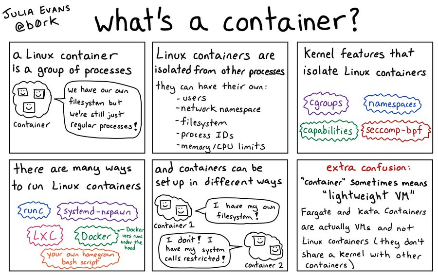
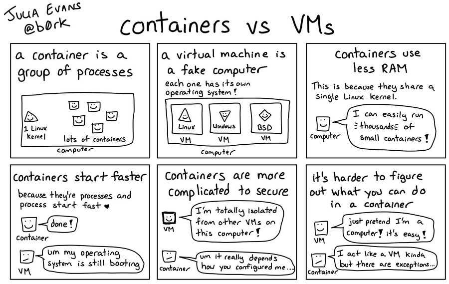
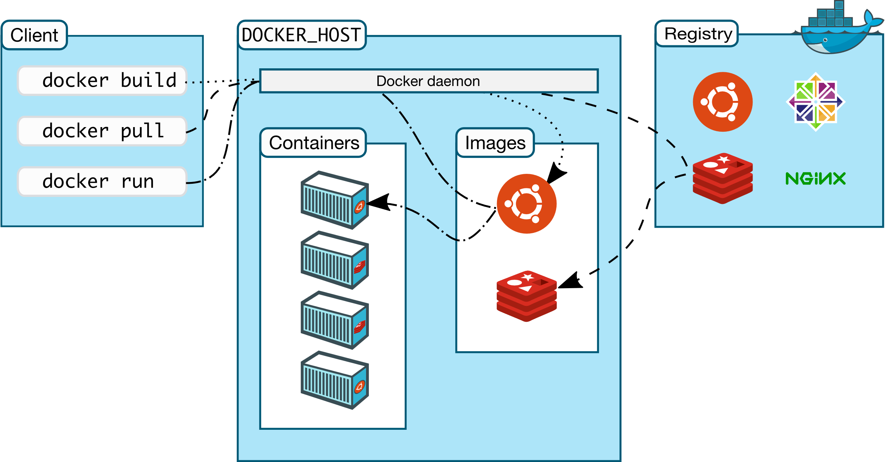
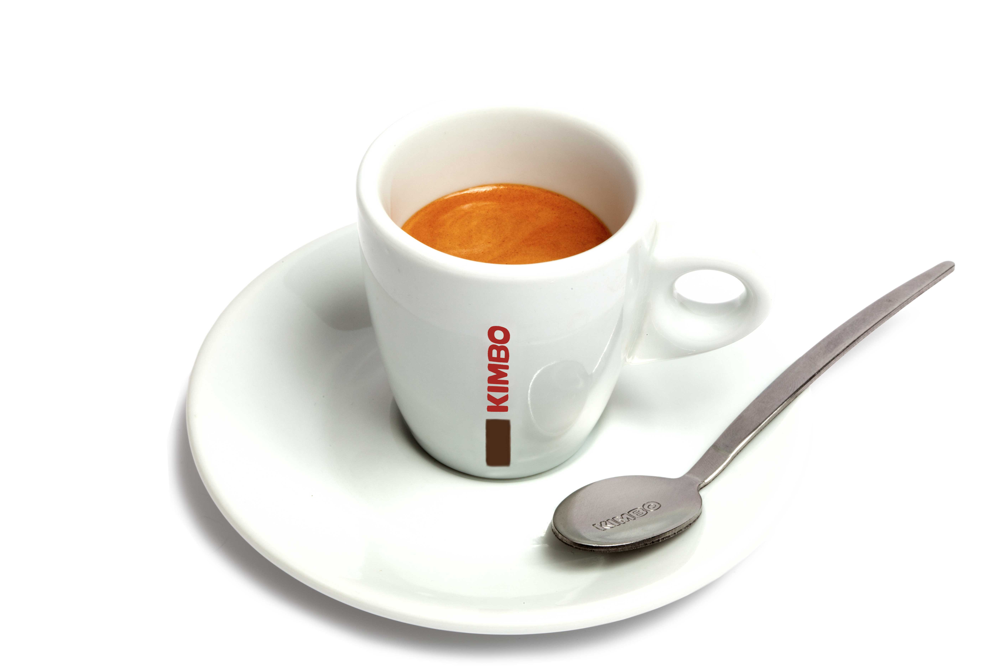
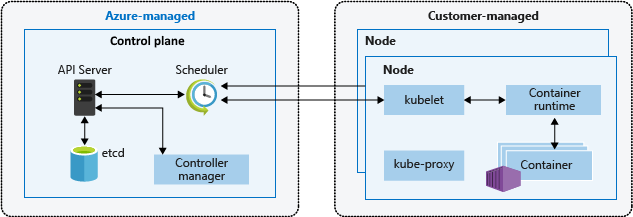
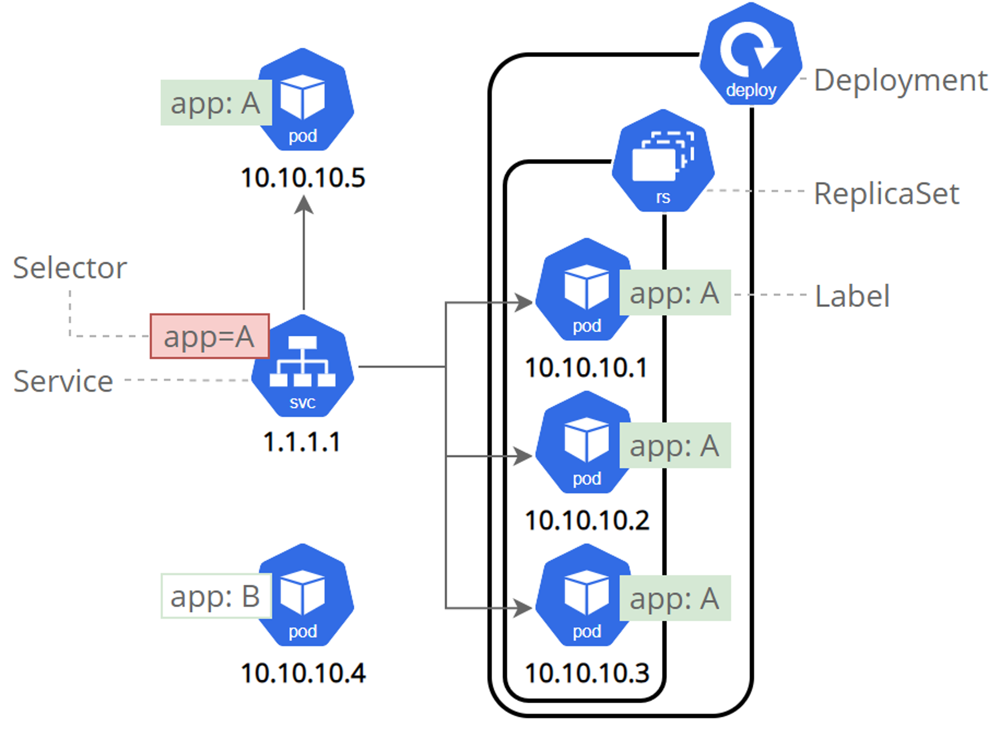
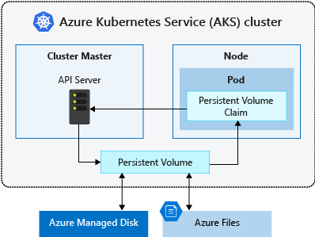
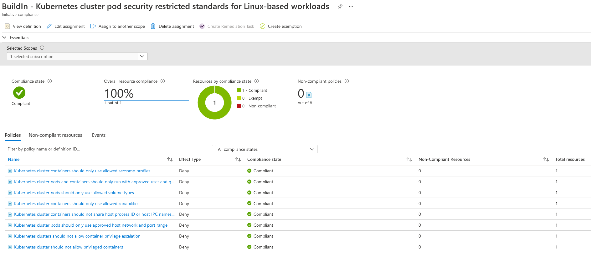
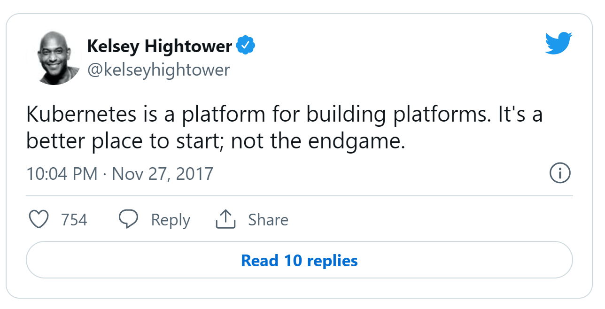
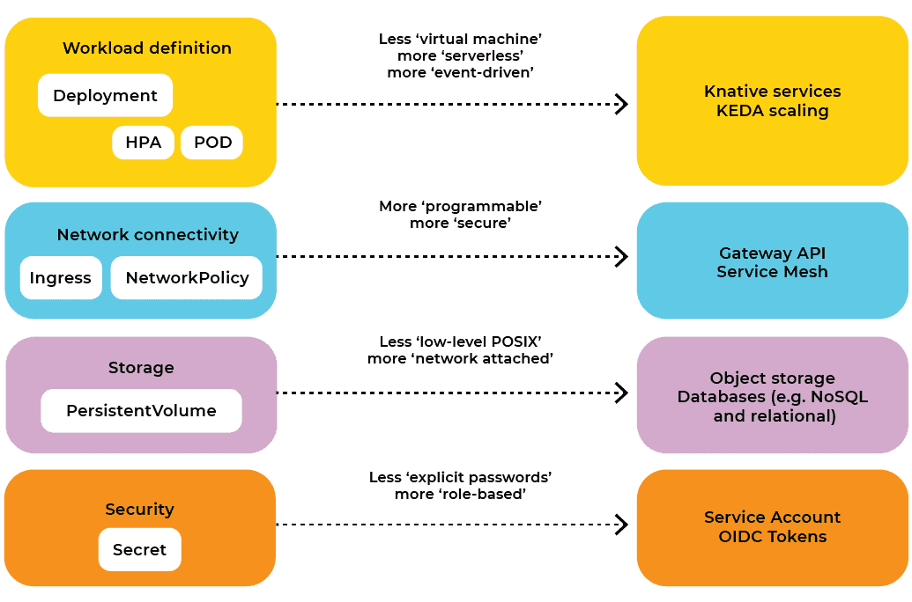

class: center, middle, inverse # Container technology # and its use for large enterprises. richard.swart@nlighten.nl --- # Agenda * TODO --- # Container shipping <iframe width="100%" height="80%" src="https://www.youtube.com/embed/0MUkgDIQdcM" title="YouTube video player" frameborder="0" allow="accelerometer; autoplay; clipboard-write; encrypted-media; gyroscope; picture-in-picture" allowfullscreen></iframe> ---  ---  --- # Reasons for using containers * All workload dependencies managed as one * Prevent version conflicts * Fast and consistent delivery of applications * The 'inside' is irrelevant for deployment * Containers are immutable * Can be deployed fast and allow for easy migration * Responsive deployment and scaling * Containers can run on local workstation, virtual machines in a datacenter or in the cloud * Scaling by adding more containers is relatively easy * You can run different workloads on the same hardware --- # Overlay file system <img src="images/layered_file_system.png" width="100%"/> --- # Benefits of an overlay file system An overlay file system adds a number of benefits, e.g.: * Reduced disk space usage (if using similar images) * Reduced time to copy over network (layer caching, parallel downloads) * Reduced image build time (caching) * Smart security scanning Add the cost of additional (low level) complexity ..... --- # Docker First widely used container solution (2013) outside the private datacenters of Google, AWS etc. Often still used as synonym for 'containers'.  --- # Docker Concepts ## Images * An **image** is a read-only template with instructions for creating a container. * Images are defined in a **Dockerfile** and build automatically. ## Containers * A **container** is a runnable instance of an image. * You can run, start, stop, pause, or delete a container using Docker API or CLI commands. * When you run a container, you can provide configuration metadata such as networking information or environment variables. ## Container registries * A **container registry** is a library of images. A registry can be public or private. --- # Container images * Container images are read-only templates from which containers are instantiated. * Each image consists of a series of layers. Docker uses union file systems to combine these layers into a single image. * An image is defined in a Dockerfile. Every image starts from a base image: ```console FROM mcr.microsoft.com/java/jre-headless:11-zulu-alpine COPY target/*.jar app.jar # Startup command ENTRYPOINT ["java","-jar","app.jar"] ``` --- # Example .NET Dockerfile **Step 1: Build .NET app** ```console FROM mcr.microsoft.com/dotnet/sdk:6.0 AS build WORKDIR /source # copy csproj and restore as distinct layers COPY *.sln . COPY aspnetapp/*.csproj ./aspnetapp/ RUN dotnet restore # copy everything else and build app COPY aspnetapp/. ./aspnetapp/ WORKDIR /source/aspnetapp RUN dotnet publish -c release -o /app --no-restore ``` **Step 2: Create a minimal image** ```console # final stage/image FROM mcr.microsoft.com/dotnet/aspnet:6.0 WORKDIR /app COPY --from=build /app ./ ENTRYPOINT ["dotnet", "aspnetapp.dll"] ``` --- <img src="images/demo.jpg" width="100%"/> --- # Containers are pervasive Which Azure Application Hosting options use containers under the hood? * App Service * Static Web Apps * Functions * Container Instances * Container Applications * Kubernetes Service (AKS) * Service Fabric --- # Pause  --- # Kubernetes Kubernetes (K8S) is an open-source platform for managing containerized workloads and services * Facilitates declarative configuration and automation It provides: * Much of the simplicity of a Platform as a Service (PaaS) * With the flexibility of an Infrastructure as a Service (IaaS) Enables portability across infrastructure providers, e.g.: * Google GKE * Amazon EKS * Azure AKS * IBM Cloud Kubernetes Service --- # Azure Kubernetes Service AKS is a (partly) managed Kubernetes implementation. A cluster can be divided into two components: * Control plane: provides the core Kubernetes services and orchestration of application workloads. * Nodes: run your application workloads.  --- # Key concepts **Pod** * A pod represents a single ephemeral instance of your application. * In advanced scenarios, a pod may contain multiple containers. Multi-container pods are scheduled together on the same node and allow containers to share related resources. **Service** * A Service is an abstraction which defines a logical set of Pods and a policy by which to access them. * Think of it as a kind of load balancer. **Deployment** * A Deployment describes the desired state for Pods (group of one or more containers with shared storage/network) and ReplicaSets (a specified number of pod replicas). --- # Pods and services * Pods and Services have their own network ranges. * Can overlap with other clusters but not with on-prem or Vnet ranges. * Services are linked to pods using (label) selectors  --- # Ingress Controller A sophisticated load balancer inside your cluster that can offer: * TLS termination * L7 routing functions: * Host & path based routing * Cookie based persistence * Request rewriting * Blue/Green deployments * WAF Comparable to Application Gateway (albeit cheaper and with more functionality). In fact, Application Gateway can act as Ingress Controller. --- # Declarative deployment * Like in Azure there is a CLI and declarative deployment format: * Azure CLI <--> kubectl * ARM templates <-->> manifest files (yaml/json) * K8S will try to maintain the target state (e.g. number of pods) * There is no build-in templating (compared to ARM template). For this you use other solutions like: * Kustomize (build in cli) * Helm charts --- # Example deployment - I `deployment.yml:` ``` apiVersion: apps/v1 kind: Deployment metadata: name: nginx-deployment spec: selector: matchLabels: app: nginx replicas: 2 template: metadata: labels: app: nginx spec: containers: - name: nginx image: nginx:1.14.2 ports: - containerPort: 80 ``` --- # Example deployment - II `service.yml:` ``` apiVersion: v1 kind: Service metadata: name: nginx-service spec: selector: app: nginx ports: - port: 80 protocol: TCP targetPort: 80 ``` --- # Example deployment - III `ingress.yml:` ``` apiVersion: networking.k8s.io/v1 kind: Ingress metadata: name: nginx-ingress spec: rules: - host: "foo.bar.com" http: paths: - pathType: Prefix path: "/bar" backend: service: name: nginx-service port: number: 80 ``` --- # Helm charts * In real live developmers rarely create the relative verbose manifest files needed for deploying applications * Templating solutions like Helm are used to provide an almost PAAS like experience for developers while ensuring consistent deployments of applicatons. --- # Update strategies K8S supports 2 update strategies to update deployments: * Recreate * RollingUpdate Combined with a smart ingress/services configuration you can do Blue/Green or Canary deployments --- # Health checking K8S has advanced health checking in the form of probes: * A **liveness** probe determines if the pods is 'alive'. On failure the pod will be killed, triggering K8S to create a new one. * A **readiness** probe determines if the pods is ready to receive requests. On failure the pod will be taken out of the corresponding service. * A **startup** probe can be used for slow starting pods. ``` livenessProbe: httpGet: path: /healthz port: liveness-port failureThreshold: 1 periodSeconds: 10 ``` ``` startupProbe: httpGet: path: /healthz port: liveness-port failureThreshold: 30 periodSeconds: 10 ``` --- # Namespaces * Namespaces provide a scope for names. Names of resources need to be unique within a namespace, but not across namespaces. * If you do not specify a namespace, the default namespace is used. * You also can use namespaces in security constructs like RBAC and Network Policies * Not suitable for true multi-tenant hosting, but depending on context a good uption for multiple teams within a single organization. --- # RBAC * K8S has her own RBAC implementation (comparable with Azure IAM) * On AKS integration with Azure AD users/groups is available Everything defined in the same declarative way as other K8S components: ```console apiVersion: rbac.authorization.k8s.io/v1 kind: Role metadata: namespace: default name: pod-reader rules: - apiGroups: [""] # "" indicates the core API group resources: ["pods"] verbs: ["get", "watch", "list"] ``` --- # Storage * Pods (applications) can request persistent storage from AKS if needed. * Under the hood standard Azure storage is provisioned: * Azure disk standard/premium * Azure files standard/premium * Avoid if you can and use: * Object (blob) storage * emptyDir (temp storage) * configMaps * secrets  --- # Autoscaling By default K8S clusters can scale in one of two ways: * The cluster autoscaler watches for pods that can't be scheduled on nodes because of resource constraints. The cluster then automatically increases the number of nodes. * The horizontal pod autoscaler uses the Metrics Server in a Kubernetes cluster to monitor the resource demand of pods. If an application needs more resources, the number of pods is automatically increased to meet the demands. <img src="images/autoscaling.png" width="60%"/> --- # Event based autoscaling * Event based scaling (KEDA) add-ons allow you to scale based on external event input and even run Azure Functions on your AKS cluster. * Example event sources * Event Hubs * Log Analytics * Azure monitor * Blob Storage * Azure Pipelines * Azure Storage Queues --- # Compliance at scale Addons like GateKeeper provide excellent options to ensure compliance at scale. For AKS Gatekeeper is integrated with Azure Policy.  --- # Kubernetes summary * Extremely powerfull container orchestration platform * Defacto standard and good cross cloud support * But not trivial to manage (even under shared responsibility model with cloud providers) * Not trivial to use ...... --- # Future of Kubernetes  --- # Future of Kubernetes II  --- # If it is not the end-game ..... what then? * Large companies that either what to maintain their on datacenters or want to be cloud agnostic build their own PAAS on top of K8S. * Some providers offer Heroku style PAAS build on top of AKS. * Next generation 'serverless' countainer platforms: * Google Cloud Run * Azure Container Apps --- # Azure Container Apps Azure Container Apps is a fully managed and serverless container service for building and deploying modern apps at scale. * Build on top of AKS * Uses Kubernetes Event-Driven Autoscaling (KEDA) * Support for Distributed Application Runtime (DAPR) for micro services * Strong focus on developer workflow --- <img src="images/demo.jpg" width="100%"/> --- # Wrap up So why should you (and your customers) be interested in container technology? One answer: logistics, logistics, logistics .... --- # Bonus: AKS CAF reference AKS Secure Baseline with Private Cluster wit core architecture components: * AKS Private Cluster * Azure Virtual Networks (hub-spoke) * Azure Firewall managed egress * Azure Application Gateway (WAF) * Application Gateway Ingress Controller * AKS-managed Internal Load Balancer * Azure CNI * Azure Keyvault * Azure Container registry * Azure Bastion * Azure Monitor for containers * Azure firewall * MongoDB * Helm * Secret store CSI driver * Azure RBAC for Kubernetes Authorization * Azure Active Directory pod-managed identities --- # Architecture diagram <img src="images/AKS-private-cluster-scenario.jpg" width="100%"/>